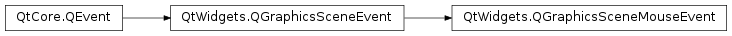

QGraphicsSceneMouseEvent¶
Synopsis¶
Functions¶
- def
button() - def
buttonDownPos(button) - def
buttonDownScenePos(button) - def
buttonDownScreenPos(button) - def
buttons() - def
flags() - def
lastPos() - def
lastScenePos() - def
lastScreenPos() - def
modifiers() - def
pos() - def
scenePos() - def
screenPos() - def
setButton(button) - def
setButtonDownPos(button, pos) - def
setButtonDownScenePos(button, pos) - def
setButtonDownScreenPos(button, pos) - def
setButtons(buttons) - def
setFlags(arg__1) - def
setLastPos(pos) - def
setLastScenePos(pos) - def
setLastScreenPos(pos) - def
setModifiers(modifiers) - def
setPos(pos) - def
setScenePos(pos) - def
setScreenPos(pos) - def
setSource(source) - def
source()
Detailed Description¶
The
PySide2.QtWidgets.QGraphicsSceneMouseEventclass provides mouse events in the graphics view framework.When a
PySide2.QtWidgets.QGraphicsViewreceives aPySide2.QtGui.QMouseEvent, it translates it to aPySide2.QtWidgets.QGraphicsSceneMouseEvent. The event is then forwarded to thePySide2.QtWidgets.QGraphicsSceneassociated with the view. If the event is not handled by the scene, the view may use it, e.g., for theQGraphicsView.DragMode.In addition to containing the item, scene, and screen coordinates of the event (as
PySide2.QtWidgets.QGraphicsSceneMouseEvent.pos(),PySide2.QtWidgets.QGraphicsSceneMouseEvent.scenePos(), andPySide2.QtWidgets.QGraphicsSceneMouseEvent.screenPos()), mouse events also contain the coordinates of the previous mouse event received by the view. These can be retrieved withPySide2.QtWidgets.QGraphicsSceneMouseEvent.lastPos(),PySide2.QtWidgets.QGraphicsSceneMouseEvent.lastScreenPos(), andPySide2.QtWidgets.QGraphicsSceneMouseEvent.lastScenePos().
-
class
PySide2.QtWidgets.QGraphicsSceneMouseEvent([type=None])¶ Parameters: type – PySide2.QtCore.QEvent.TypeConstructs a generic graphics scene mouse event of the specified
type.
Return type: PySide2.QtCore.Qt.MouseButtonReturns the mouse button (if any) that caused the event.
Parameters: button – PySide2.QtCore.Qt.MouseButtonReturn type: PySide2.QtCore.QPointFReturns the mouse cursor position in item coordinates where the specified
buttonwas clicked.
Parameters: button – PySide2.QtCore.Qt.MouseButtonReturn type: PySide2.QtCore.QPointFReturns the mouse cursor position in scene coordinates where the specified
buttonwas clicked.
Parameters: button – PySide2.QtCore.Qt.MouseButtonReturn type: PySide2.QtCore.QPointReturns the mouse cursor position in screen coordinates where the specified
buttonwas clicked.
Return type: PySide2.QtCore.Qt.MouseButtonsReturns the combination of mouse buttons that were pressed at the time the event was sent.
-
PySide2.QtWidgets.QGraphicsSceneMouseEvent.flags()¶ Return type: PySide2.QtCore.Qt.MouseEventFlagsReturns the mouse event flags.
The mouse event flags provide additional information about a mouse event.
See also
Qt.MouseEventFlagQMouseEvent.flags()
-
PySide2.QtWidgets.QGraphicsSceneMouseEvent.lastPos()¶ Return type: PySide2.QtCore.QPointFReturns the last recorded mouse cursor position in item coordinates.
-
PySide2.QtWidgets.QGraphicsSceneMouseEvent.lastScenePos()¶ Return type: PySide2.QtCore.QPointFReturns the last recorded mouse cursor position in scene coordinates. The last recorded position is the position of the previous mouse event received by the view that created the event.
-
PySide2.QtWidgets.QGraphicsSceneMouseEvent.lastScreenPos()¶ Return type: PySide2.QtCore.QPointReturns the last recorded mouse cursor position in screen coordinates. The last recorded position is the position of the previous mouse event received by the view that created the event.
-
PySide2.QtWidgets.QGraphicsSceneMouseEvent.modifiers()¶ Return type: PySide2.QtCore.Qt.KeyboardModifiersReturns the keyboard modifiers in use at the time the event was sent.
-
PySide2.QtWidgets.QGraphicsSceneMouseEvent.pos()¶ Return type: PySide2.QtCore.QPointFReturns the mouse cursor position in item coordinates.
-
PySide2.QtWidgets.QGraphicsSceneMouseEvent.scenePos()¶ Return type: PySide2.QtCore.QPointFReturns the mouse cursor position in scene coordinates.
-
PySide2.QtWidgets.QGraphicsSceneMouseEvent.screenPos()¶ Return type: PySide2.QtCore.QPointReturns the mouse cursor position in screen coordinates.
-
PySide2.QtWidgets.QGraphicsSceneMouseEvent.setButton(button)¶ Parameters: button – PySide2.QtCore.Qt.MouseButton
-
PySide2.QtWidgets.QGraphicsSceneMouseEvent.setButtonDownPos(button, pos)¶ Parameters: - button –
PySide2.QtCore.Qt.MouseButton - pos –
PySide2.QtCore.QPointF
- button –
-
PySide2.QtWidgets.QGraphicsSceneMouseEvent.setButtonDownScenePos(button, pos)¶ Parameters: - button –
PySide2.QtCore.Qt.MouseButton - pos –
PySide2.QtCore.QPointF
- button –
-
PySide2.QtWidgets.QGraphicsSceneMouseEvent.setButtonDownScreenPos(button, pos)¶ Parameters: - button –
PySide2.QtCore.Qt.MouseButton - pos –
PySide2.QtCore.QPoint
- button –
-
PySide2.QtWidgets.QGraphicsSceneMouseEvent.setButtons(buttons)¶ Parameters: buttons – PySide2.QtCore.Qt.MouseButtons
-
PySide2.QtWidgets.QGraphicsSceneMouseEvent.setFlags(arg__1)¶ Parameters: arg__1 – PySide2.QtCore.Qt.MouseEventFlags
-
PySide2.QtWidgets.QGraphicsSceneMouseEvent.setLastPos(pos)¶ Parameters: pos – PySide2.QtCore.QPointF
-
PySide2.QtWidgets.QGraphicsSceneMouseEvent.setLastScenePos(pos)¶ Parameters: pos – PySide2.QtCore.QPointF
-
PySide2.QtWidgets.QGraphicsSceneMouseEvent.setLastScreenPos(pos)¶ Parameters: pos – PySide2.QtCore.QPoint
-
PySide2.QtWidgets.QGraphicsSceneMouseEvent.setModifiers(modifiers)¶ Parameters: modifiers – PySide2.QtCore.Qt.KeyboardModifiers
-
PySide2.QtWidgets.QGraphicsSceneMouseEvent.setPos(pos)¶ Parameters: pos – PySide2.QtCore.QPointF
-
PySide2.QtWidgets.QGraphicsSceneMouseEvent.setScenePos(pos)¶ Parameters: pos – PySide2.QtCore.QPointF
-
PySide2.QtWidgets.QGraphicsSceneMouseEvent.setScreenPos(pos)¶ Parameters: pos – PySide2.QtCore.QPoint
-
PySide2.QtWidgets.QGraphicsSceneMouseEvent.setSource(source)¶ Parameters: source – PySide2.QtCore.Qt.MouseEventSource
-
PySide2.QtWidgets.QGraphicsSceneMouseEvent.source()¶ Return type: PySide2.QtCore.Qt.MouseEventSourceReturns information about the mouse event source.
The mouse event source can be used to distinguish between genuine and artificial mouse events. The latter are events that are synthesized from touch events by the operating system or Qt itself.
See also
Qt.MouseEventSourceQMouseEvent.source()
© 2018 The Qt Company Ltd. Documentation contributions included herein are the copyrights of their respective owners. The documentation provided herein is licensed under the terms of the GNU Free Documentation License version 1.3 as published by the Free Software Foundation. Qt and respective logos are trademarks of The Qt Company Ltd. in Finland and/or other countries worldwide. All other trademarks are property of their respective owners.